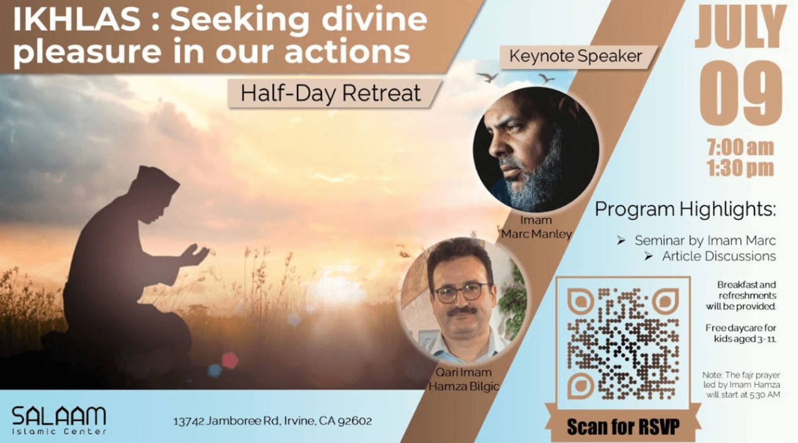
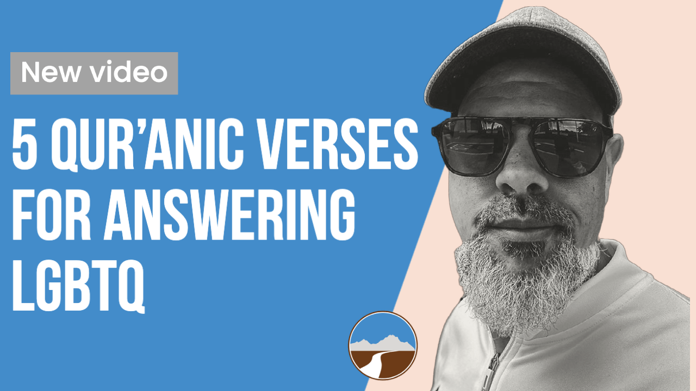
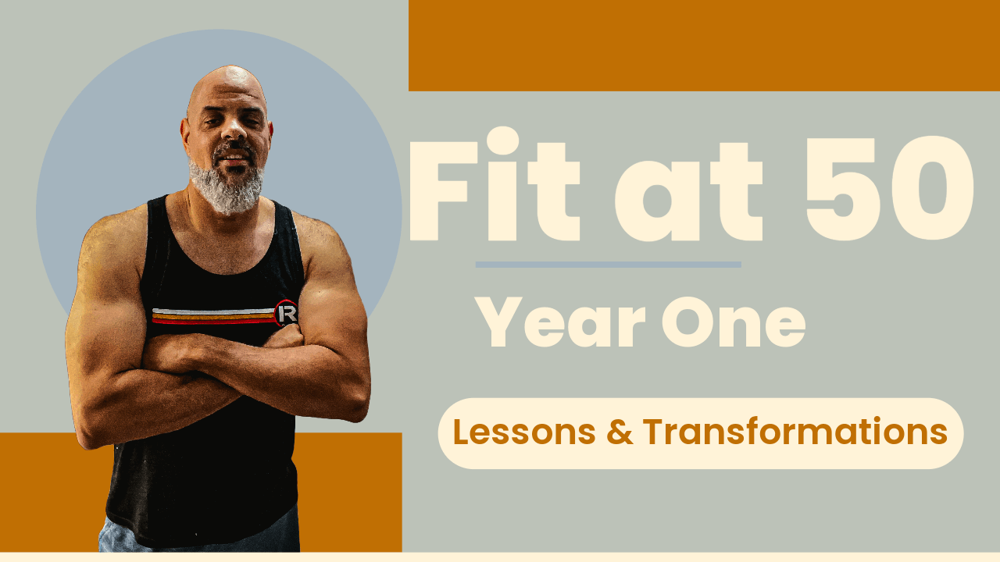
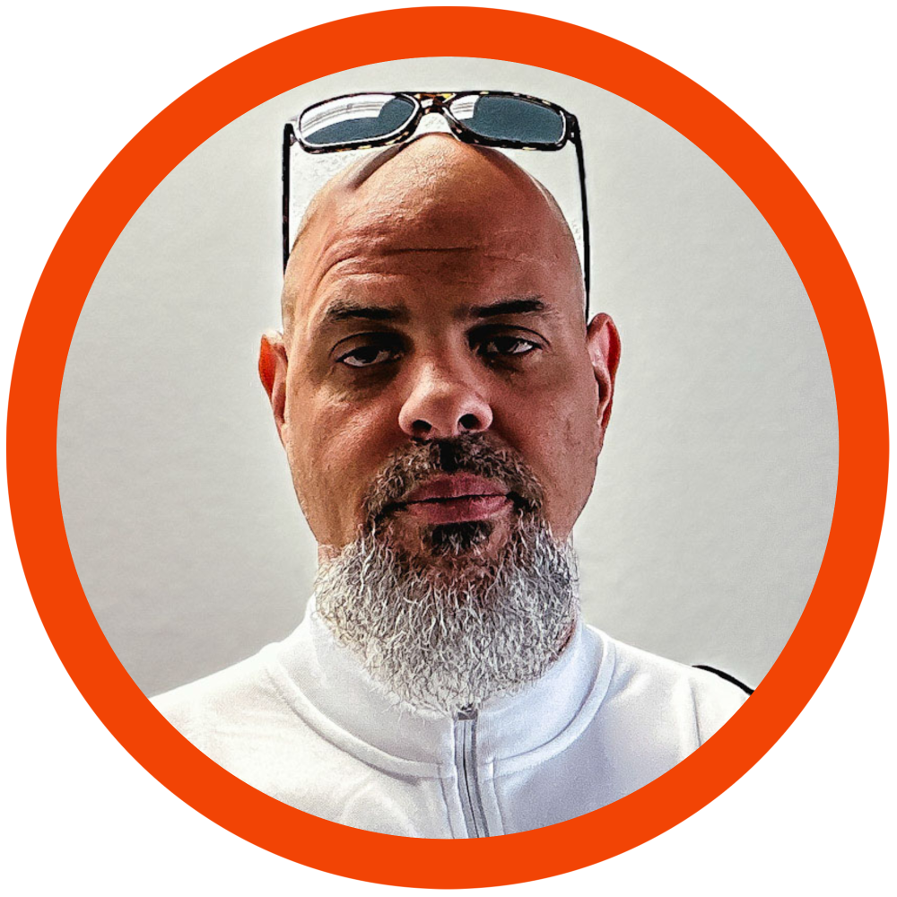

 al-Ḥamdulillāh, it was a real honor and pleasure to give the keynote speech at the Salaam Islamic Center's retreat, Ikhlas: Seeking Divine Pleasure In Our Actions. You can listen below to the talk (our new Middle Ground Podcast).
For more videos on the retreat click here.
 In this video I provide five verses from the Qur’ān to provide Muslims a framework with which to understand LGBTQ and how Muslims can have a reverential prophetic methodology of answering this challenge in our time.
 A year ago I started a new fitness endeavor which I called Fit at Fifty when I was 49 in hopes of being in better health by 50. Now that I’ve turned 50 here are some reflections and what worked and where I’m headed now.
For more detailed information about Middle Ground classes and events, visit the website and sign up for the mailing list.
 I currently serve as the imam and religious director at Middle Ground. I started my path towards being an imam back in Detroit where I started my Islamic studies under the tutelage of Dr. Ali Sulaiman Ali. I subsequently spent a number of years studying the Warsh recitation of the Qur'an from a hafidh from Algeria.
Years later I found myself in Philadelphia, America's premier city for indigenous Islam, where, under the support of such teachers as Shaykh Anwar Muhaimin at Quba Masjid and Adnan Zulficar, I took the position of Muslim Chaplain at the University of Pennsylvania. From here I also developed the first Muslim chaplaincy program at Drexel University. Not long after, the Islamic Center of Inland Empire called, offering the position of Imam and Director. I left ICIE in 2015 to open Middle Ground. You can read more about what Middle Ground is there but to say the least, it's been a life-changing experiece that's still unfoldilng.
Thanks for stopping by – M